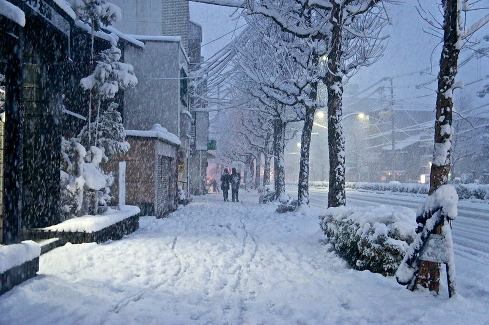

My First Snow in Kyoto
[Click the image to view on Google Maps]

This is on one of the main streets in Kyoto. The snow was so heavy there were hardly any people about.
Next Page
Previous Page
RETURN